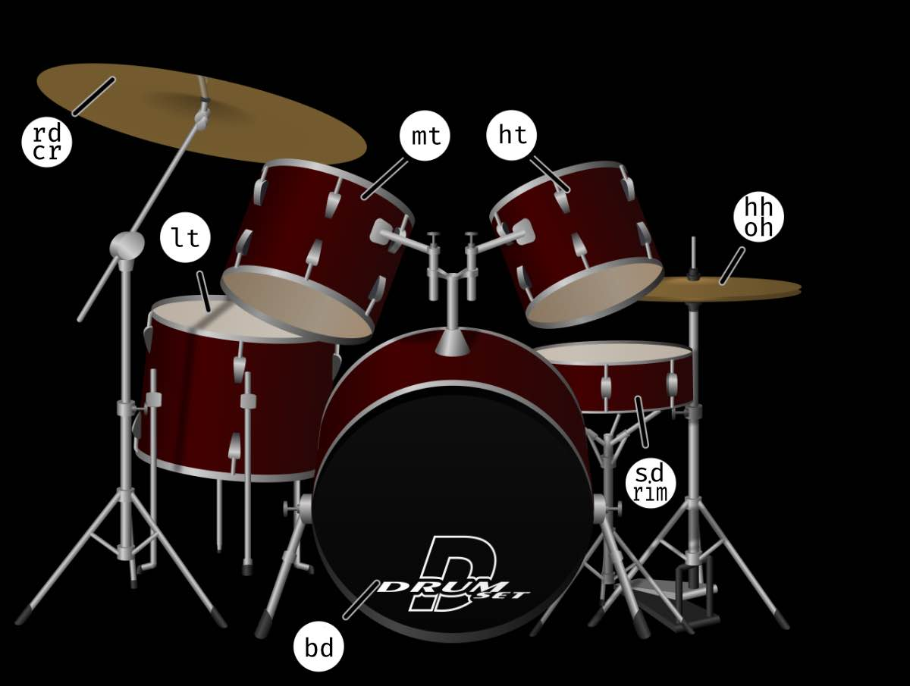

Beats
 // Four on the Floor $: sound("[bd bd bd bd]").bank('RolandTR909') // Tildes are RESTS ~ $: sound("[~ sd ~ [~ sd]]").bank('RolandTR909') // Multipliers (*) can make things go faster $: sound("[hh hh hh hh]*2").bank('RolandTR909') $: sound("bd hh sd [ht mt lt]") Special Characters DRUM LIST [] - play all notes in a single beat bd = bass drum <> - Each Cycle hh = high hat ~ - rest oh = open hat * - speed up sd = snare drum / - slow down rd = ride ! - replicate cr = crash @ - elongate lt = low tom , - parallel mt = med tom $ - play in parallel threads ht = high tom _ - mute a line cp = clap SPACE - sequence sh = shaker cb = cowbell BANK LIST tb = tambourine AkaiLinn RhythmAce RolandTR808 RolandTR707 ViscoSpaceDrum